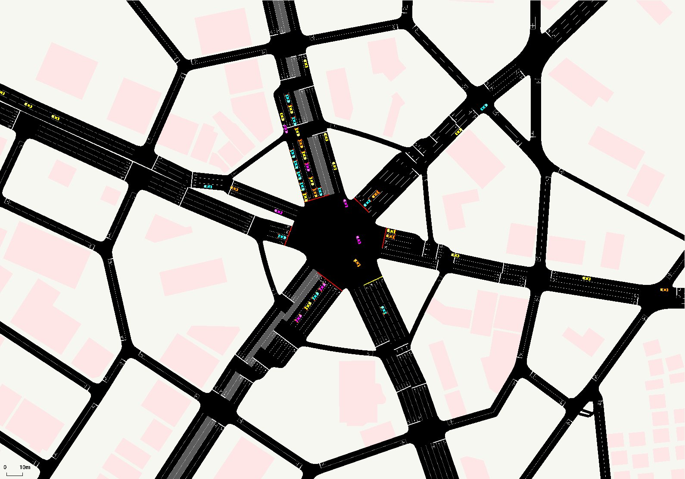

Jump to a scene
The final model (RL2) drives the full 6.7 km test loop (loop B) in SUMO; 23 minutes of driving shown in 56 seconds. Click a scene to jump to it.
Overview
We rebuilt Busan's Yeonsan junction in the SUMO traffic simulator and trained an autonomous vehicle (AV) to drive through it. Six roads meet here, so the AV has to pick the lane for its exit early, then merge, yield and change lanes among background traffic matched to real counts.
The AV first imitated an expert driver (behavior cloning, then DAgger) and was then fine-tuned with reinforcement learning (PPO). In 960 evaluation runs it reached its destination 98.75% of the time with a 0.21% collision rate. We release 10,647,162 transitions on Hugging Face.
Rebuilding the real junction, lane by lane

- Imported the six approaches from OpenStreetMap with netconvert.
- Checked all 34 lanes against street view and the national standard node-link data, fixing lane directions, BRT bus-only lanes and right-turn slip roads.
- The real signal plan is not public, so we designed one: 6 phases in a 120 s cycle (3 s yellow, 2 s all-red) that group non-conflicting movements.
SUMO, TraCI and libsumo are pinned to 1.27.1 (requirements.txt).
Driving among realistic traffic
Junction demand follows Busan's 2025 traffic survey (hourly, by vehicle class) for all 25 movements. Background flows were added on the rest of the AV's test loop.
| Junction demand | 4,507 veh/h (4,303 cars + 204 buses). The survey total of 5,015 veh/h includes motorcycles, which are not simulated. |
|---|---|
| Loop background flows | +4,550 veh/h (2,000 measured on Yeonsu-ro, 2,550 assumed) |
| Car-following models | Krauss 35%, IDM 30%, EIDM 20%, ACC 15% |
| Driver and vehicle mix | 12% aggressive and 10% cautious drivers, taxis with pick-ups, short stops |
| Gridlock check | SUMO teleports of background vehicles: 153 → 16 (three 1-hour runs at full demand) |

World Cup-daero
Looks for a safe gap in the next lane before moving over to turn right.
Yeonsu-ro merge
Slows on the unsignalized ramp and yields to main-road traffic.
Yeonsan junction
Waits for green and moves off with the cars in front.
Across the dataset, an average of 51.8 vehicles are within 150 m of the AV and 6.79 are inside its observation range (±100 m).
Observation, action and reward
Every 0.5 s the AV reads a 56-dimensional observation and outputs two actions: acceleration and lane change. The bar splits the 56 values by what they describe.
Action
Acceleration a ∈ [−1, 1], mapped to −5 … +3 m/s²
Lane change ∈ {left, keep, right}
Not in the observation
Following the course rules and TA answers: no lane-level route guidance, no remaining signal time, and no conflicting vehicles inside the junction.
Reward
| Route progress | +0.1 × Δd / (vmax · Δt) | Distance along the route |
|---|---|---|
| Overspeed | −0.5 × (v − vlim) / vlim | Above the lane speed limit |
| Time to collision (TTC) | −0.3 × (1 − TTC / 3 s) | TTC < 3 s |
| Short gap | −0.1 | Gap < 6 m at ≥ 1 m/s |
| Blocked by a slow leader | −0.05 | Leader < 20 m, not waiting at a light |
| Target lane | −0.05 × (1 − dlane / 300 m) | Current lane does not continue on the route |
| Collision | −50 | Terminates |
| Red-light violation | −30 | Terminates |
| Dead-end lane, teleport | −10 | Terminates |
| Arrival | +2 | Terminates |
Training: imitation first, then PPO
PPO with reward alone did not learn to change lanes before diverges, so we switched to imitation learning from an expert (BC, then DAgger) and fine-tuned with PPO.
| Method | Evaluation | Arrival / collision | |
|---|---|---|---|
| 1 | PPO, reward only | 7 routes, 280 runs | 68% / 4.3% |
| 2 | Behavior cloning (BC), corrected expert | 7 routes, 0.5× demand, 560 runs | 85.0% / 4.1% |
| 3 | DAgger, 8-model ensemble | 7 routes, 0.85× demand, 840 runs | 97.0% / 0.60% |
| 4 | Single-policy PPO + BC loss (sr1) | Loop B, 1.0× demand, 480 runs * | 92.71% / 4.38% |
| 5 | Retrained in the fixed environment (RL2, final) | Loop B + background flows, 4 conditions, 960 runs | 98.75% / 0.21% |
Routes and demand differ between steps, so compare within a row. * Re-measured after fixing a seed bug in the evaluation script that made runs repeat (PR #19).
Results
| Arrival rate | 960 runs, 4 traffic conditions (95% CI 97.8–99.3%) | 98.75% |
|---|---|---|
| Collision rate | 95% CI 0.06–0.76%. Over 3,600 independent runs: 0.58% (0.38–0.89%). Course target < 5%. | 0.21% |
| Transitions | 3,600 episodes, one step per 0.5 s, on Hugging Face | 10,647,162 |
Dataset: 10,647,162 transitions
3,600 episodes driven by the final model, logged every 0.5 s. Each row pairs the AV's partial observation with the simulator's privileged state.
episode, t | Episode id (= seed), step |
|---|---|
observation | 56-dim partial observation |
action | Raw and applied acceleration and lane change |
reward, terminated | Step reward and termination flags |
state | Ego pose and speed, signal groups, vehicles within 150 m |
event | collided, arrived, red_light, wrong_lane, teleported |
9 shards of 400 episodes, each in three formats
.parquet6.92 GB, columnar, read only what you need.jsonl.gz9.66 GB, one transition per line.npz0.81 GB, arrays for offline RL and BC.meta.jsonCollection settings and code tables
import pandas as pd
url = "hf://datasets/hoseob0902/HexaCross-dataset/v2/loopB/loopB_RL2_s11.parquet"
df = pd.read_parquet(url)Run it yourself
git clone https://github.com/jimin326/HexaCross && cd HexaCross
pip install -r requirements.txt # includes SUMO and libsumo 1.27.1
# Evaluate the final model: loop B, 240 runs per traffic condition
ROUTE_SET=loopB MAX_STEPS=6000 LANE_PLAN_RANGE=300 ROAD_DETAILS=driver_styles,taxi,short_stops \
python tools/rl/eval_parallel.py models/yeonsan_loopB_RL2/model.pt results/eval_RL2 --n 240 --workers 4
# Collect transitions: seed 11, 400 runs
ROUTE_SET=loopB MAX_STEPS=6000 LANE_PLAN_RANGE=300 ROAD_DETAILS=driver_styles,taxi,short_stops \
python collect_pomdp_data.py --model models/yeonsan_loopB_RL2/model.pt --episodes 400 --workers 4 --seed 11 --name loopB_RL2_s11Windows commands and more options are in the README files on GitHub.
Problems and fixes
| Problem | Fix | Result |
|---|---|---|
| Background vehicles queued in one lane and blocked the approaches | Demand-based green times, lane changes enabled, start-up acceleration 2.6 m/s² | Background teleports: 153 → 16 |
| The imitated expert kept going on yellow, so the AV crossed the stop line just after red | Relabeled yellow-light actions: stop whenever possible at ≤ 4 m/s² | Red-light violations: 18.3% → 0% (60 runs each) |
| 33 of the previous model's 39 collisions were at the unsignalized Yeonsu-ro merge | Relabeled 6,356 expert actions: decelerate from 60 m out to 4 m/s at the merge entry | Collisions in the training condition: 8 → 0 of 240 |
| Removing the speed-limit clip on actions (TA ruling) made the old policy overspeed | Raised the BC-loss speed cap to the vehicle top speed (27.78 m/s) and added an overspeed penalty | Mean acceleration output at the limit: +0.057 → +0.008 |
| SUMO teleported an AV waiting over 300 s at a red light, and it was logged as a red-light violation | Detect teleports and log them separately (event.teleported) | All 4 reproduced cases logged as teleports, none as red-light violations |